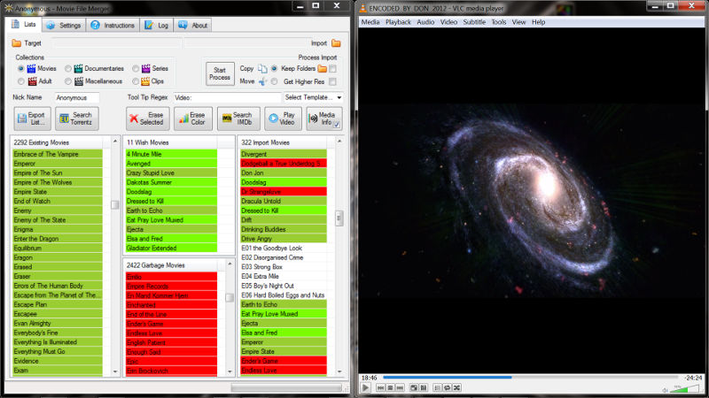

MFM Basic Introduction
Movie File Merger (MFM) helps you with the selective combination of video collections, like home videos, movies, series, or documentaries. It can be used also for other types of collections, like music, or basically any files, but MFM is optimized for videos.
For more information have a look at the MFM User Manual or check out How to Organize Videos on Your Hard Disks. Both books are a work in progress, but there should be already some useful stuff in there.


The Movie File Merger Wiki contains information related to the program, which is basically the user manual and how to organize videos combined.
Features
MFM is not a movie database program like Personal Video Database! MFM is designed so that the lists can be easily updated once out of date. MFM runs in Dropbox, which makes it easier to share lists with other people. MFM is portable, so that you can run it from anywhere, on any hard disk or memory stick. MFM works together with multiple other programs, like GOM, VLC, MediaInfo, or TeraCopy. All of them can be downloaded and used for free.
Some examples of what you can do with MFM are:
- Select which videos are copied or moved
- Select the videos to copy before hand; lists are small can be easily distributed over the internet
- Copy only relevant videos in the Wish list
- Ignore videos in the Existing and Garbage lists; don't have all the stuff duplicated in various locations
- Select movies according to predefined genre lists from IMDb
- Select videos according to regular expressions which can be tested with Rubular; for example year 2013
- Search for movies or series on IMDb
- Search for videos on torrentz.eu
- List detailed media information with MediaInfo
- View video media information in the pop-ups when hovering over a list entry
- Select videos according to filtered media information; for example horizontal resolution greater than 1000 pixels
- Play videos in the Import list with your default player
100% Clean
Use one of the sites below to download MFM, if you prefer to have a virus checked download.
If you like MFM, please consider making a donation in my Bitcoin wallet.

Hidden Benefits
MFM is designed so that it is quite flexible. How and for what to use it depends basically on you, what means also that you'll have to use it for some time to figure out which way is best. Some of the not that obvious benefits are:
- Backup your video collections on hard disks of others, that way they can watch your videos and you safe space
- Social gathering when visiting your friend, because your two hard disks have to be brought together to make it happen
- Save internet bandwidth, because large data quantities are moved over USB or similar
- Faster than backing up in the cloud, transferring data over USB 3.0 is around 150MB/s
Rewards Rewards
Below are some rewards MFM got so far...
Reviews
For a more comprehensive list of reviews go to the MFM Review Forum.
Movie File Merger is an interesting program for users who want to move or copy video files.
It does not really matter if you want to perform those operations on your own movie collection
or if you use it to merge a friend's collection with your own.
Movie File Merger is the most ideal program helpful with the selective combination of video collections,
like home videos, movies, series, or documentaries. As the name suggests, this handy program enhanced
with the latest technology and a fast and straightforward interface helps you with the selective combination
of video collections, like home videos, movies, series, or documentaries. It is also useful with other collections,
like music, or other files, and is optimized for videos. The tool also supports various other features like:
the option to select videos to be copied and moved, ability to copy relevant videos in the Wish list,
ability to ignore videos in the Existing and Garbage lists, ability to select movies according to predefined genre lists
from IMDb, ability to search for videos on torrentz.eu, and much more.
Movie File Merger, this capable software also supports the option of playing the video with your default player.
Used to administer and join video collections or move selections to another location.
In addition, MFM can be used for other media like audio files, but the tool has been designed to deal with videos.
The user interface looks friendly at the first run; it only requires importing the movie files,
sorting them into the provided categories. There are two main categories the 'Wish' is intended for the active records,
and the 'Garbage' is commonly used as a recycle bin area.
Moreover, it comes with six predefined categories, including general movies, documentaries, adult, series and miscellaneous.
Users can manage the media lists easily; in fact, it comes with the export/import functions,
that enable to export a given list of records as CSV. In addition, users will be able to import CSV lists
of previously extracted items into the application; it allows to save time and effort, enabling massive data exchange.
The 'Search Torrent' function, enables to search for a specific movie into the media site.
In addition, the IMDB procedure allows to search for the movie's information on the Internet Movie Database;
it is useful to complete the record's info.
It comes with the option to install the MediaInfo program, which displays movie's detailed information;
it is optional and should be installed separately.
The play video function, provides users the ability of preview movies inside the application;
it allows to define a custom player.
Another important feature is the extended support for diverse video formats, as default it comes with AVI,
MP4 and MKV and the user can add other formats in the option tab.
The subtitle supported, includes SRT and SUB, with other formats adding capabilities.
Finally, Movie File Merger is an useful program, intended for people that need to administer long movie's collections;
it offers a simple way to copy, move files and also enables to merge collections taking care about duplications.
(From Google Translate)
MFM is a tool that when you learn to use, has a lot to offer.
It has integrated search, allows you to delete the files from the original location and separates their lists
in six categories, something very interesting to organize videos on your computer.
Worth downloading Movie File Merger, especially if you do not mind reading a lot about the program's functions
before starting to use it. It has very detailed wikis on the developer's site,
which can help a lot with the problem of the interface intuitiveness.
Copyright © 2012-2015 Reinhold Lauer